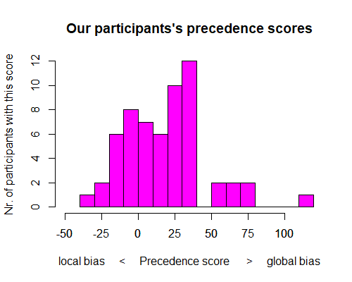
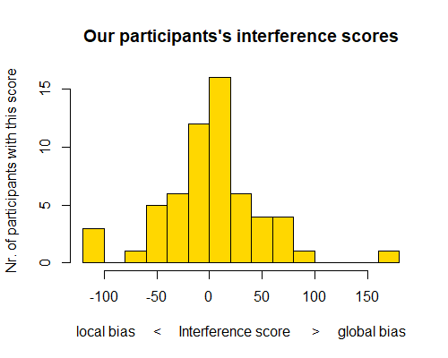

<!DOCTYPE html>
<html>
  <head>
    <title>NAV</title>
    <!-- Importing all necessary scripts and sheets -->

    <!-- General jsPsych script and general jsPsych css stylesheet -->
    <script src="jspsych-6.2.0/jspsych.js"></script>
    <link href="jspsych-6.2.0/css/jspsych.css" rel="stylesheet" type="text/css">

    <!-- Specific jsPsych plugins used in the experiment -->
    <script src="jspsych-6.2.0/plugins/jspsych-html-keyboard-response.js"></script>
    <script src="jspsych-6.2.0/plugins/jspsych-html-button-response.js"></script>
    <script src="jspsych-6.2.0/plugins/jspsych-video-button-response.js"></script>
    <script src="jspsych-6.2.0/plugins/jspsych-resize.js"></script>
    <script src="jspsych-6.2.0/plugins/jspsych-fullscreen.js"></script>
    <script src="jspsych-6.2.0/plugins/jspsych-image-keyboard-response.js"></script>

    <!-- Script needed to run the study with a jatos server; is provided automatically by Jatos when setting the study up -->
    <!-- IMPORTANT: not needed to just run the study in the browser, as this script is currently set up to do (see very end of script) -->
    <!-- <script src="/assets/javascripts/jatos.js"></script> -->

  </head>
  <body></body>
  <script>

// README

// The experiment can be thought of as a slideshow with no turning back possible
// Slides move on by themselves (when a participant needs to see multiple slides during a task), or after a participant has given a response

// The experiment contains 5 sections: Introduction, Kimchi, Navon, RAF, Questions
// Each experiments consists of segments
// Segments may be a single "slide" (for example with a single question) or may be a whole task which will display even hundreds of single slides before it is finished and the next segment is called

// What I call "segments" is NOT equivalent to jsPsych-plugins, since one segment may employ multiple jsPsych-plugins
// A task-segment for example may use an image-response-plugin and a html-response plugin


// THE EXPERIMENT, SESSION 1

// Timeline variable, contains all segments that are then called in chronological order
// Segments are pushed into the array in order from top to bottom
	var timeline = [];
// Segment to give people time to prepare their fingers for the trial after the instructions
    var prep_time_keyboard = {
      type: 'html-keyboard-response',
      stimulus: '',
      choices: jsPsych.NO_KEYS,
      trial_duration: 1000
    }

////////// NAVON ///////////////////////////////////////////////////////////////////////////////////////////////////////////////

// Calculating the display size of Navon images, based on the measures and display size of my own laptop:

// 1) Calculate the size of the figure in pixels (full image is larger than figure alone)
// Navon IMAGE is HxW 800x600px = 14.112x10.584cm_in_PowerPoint, the FIGURE is 14x10cm_in_PowerPoint
// Already calculated px/cm ratio: 56.69px/cm_in_PowerPoint
// Size of figure: 56.69px/cm_in_PowerPoint * (14x10)cm_in_powerpoint = (793.7x566.9)px

// 2) Calculate the pixels to give to jsPsych so that the figure is displayed in the right cm-size
// If I want to display the FIGURE as 2.7559*1.9685inch (7x5cm): (2.7559*1.9685inch) * 100px_per_inch = (275.59*196.85px) of input FIGURE needed
// Screenshot including white is (14.112/14=) 1.008 times higher and (10.584/10=) 1.058 times wider than the input figure on it
// (275.59x196.85px) * (1.008x1.058) = (277.8x208.3px)
// Conclusion: If I want to display the FIGURE as 7x5cm, the input IMAGE needs to be 277.8x208.3px

// Defining Navon task parameters (not a segment)
	var navon_stim_h = 277.8;
	var navon_stim_w = 208.3;	     // Navon display size variables (100px will be 1 inch = 2.54 cm)
	var navon_blank_duration = 1000; // duration of the blank before a Navon stimulus
	var navon_stim_duration = 100;   // duration of the Navon figure stimulus in ms, they used 15, but that might be a problem with refresh rates (60 Hz = 16 ms long display)

// Fullscreen is turned on, when the participant leaves the fullscreen they would need to make the experiment fullscreen again themselves
  var fullscreen_on = {
    type: 'fullscreen',
    fullscreen_mode: true,
    button_label: 'Go full screen',
    message: '<p>The experiment will switch to full screen mode when you press the button below. <br>If you accidentally leave the fullscreen mode, you can return by pressing F11 (or Fn + F11) on your keyboard. <br><br> Your data will not be stored!</p>'
  };


// Resizing the display: uses the credit card check, to get browser's inch/pixel-ratio to resize the experiment container to display images in the correct size
    var resize = {
      type: 'resize',
      item_width: 3 + 3/8,		// credit card width in inch
      item_height: 2 + 1/8,		// credit card height in inch
      prompt: "<p>Click and drag the lower right corner of the blue box until the box is the same size as a credit card/debit card/library card held up to the screen. It is important that the size is really accurate!<br>Once the box has the exact size of the card, press the button.</p>",
      pixels_per_unit: 100,		// 100 keeps the font at same size, 150 makes font size smaller
      button_label: ['Box has the right size'],
      // additionally stores the following data
      on_finish: function(data){
        data.browserwidth_in_cm = 8.56 / data.final_width_px * window.outerWidth;	// calculate the size of the picture in cm, to tell whether the image was too big to fit onto the screen or not.
        data.browserheight_in_cm = 8.56 / data.final_width_px * window.outerHeight;
        data.outerwidth_in_px = window.outerWidth;		// store the size of the browser in pixel, to later see whether a "blocky" appearance of the rod in the RAF could have made a difference
        data.outerheight_in_px = window.outerHeight;
        data.innerwidth_in_px = window.innerWidth;
        data.innerheight_in_px = window.innerHeight;
      }
    };
    // Now the experiment is set to display 100 pixels of an input image as 1 inch (either the real input size or - if specified - the size defined by stimulus_height and stimulus_width
    // Calculate the pixel dimensions of the images needed to get the correct display size on the screen in inch: Take the desired display size of pictures in INCH, multiply by pixels_per_unit (100) and out come the dimensions in PIXEL that the input image must have, so that it is displayed in the correct INCH-size on all computers.


// 3.0 Introduction
    var introduction = {
      type: 'html-button-response',
      stimulus: "<p>This is the Navon task as the participants were presented in session 1 and 2.</p>",
      choices: ['Continue']
    };

// 3.1 Explanation video, explaining the Navon-task and solving four trials
    var navon_video = {
	    type: "video-button-response",
        stimulus: ["video/navon_instructions.mp4"],
        choices: ["Go to practice"],
        response_allowed_while_playing: false,
        controls: true
    }

// Local practice block
// 3.2 Explaining the task again, in writing, for the local condition
	var navon_local_practice_block_instructions = {
        type: 'html-button-response',
        stimulus: "<p>This is a practice round.<br><br><br></p> <p><b>Instructions:</b> For the following images, please indicate which <b>small</b> letters you see by pressing the corresponding key (T or H) on the keyboard.<br>Respond quickly, but make sure to be correct. The screen will stay white until you make a response.</p>",
        choices: ['Start practice']
	};
// 3.3 Navon practice trials for the local condition
    var navon_local_practice_block = {
        timeline: [
            // the following three slides constitute one Navon-trial
            {
                // first blank
                type: 'html-keyboard-response',
                stimulus: '',
                choices: jsPsych.NO_KEYS,
                trial_duration: navon_blank_duration,
                data: {test_part: 'blank'}
            },
            {
                // Navon-stimulus
                type: 'image-keyboard-response',
                stimulus: jsPsych.timelineVariable('navon'), // gets the stimulus for the current trial from the timeline_variable (below)
                choices: jsPsych.NO_KEYS,
                trial_duration: navon_stim_duration,
                stimulus_height: navon_stim_h,
                stimulus_width: navon_stim_w
            },
            {
                // second blank, remains until response happens, two options h for H-letters on screen and t for T-letters on screen
                type: 'html-keyboard-response',
                stimulus: jsPsych.timelineVariable('instruction'),
                choices: ['h','t'],
                data: jsPsych.timelineVariable('data_level'),
                // add to data whether the keypress (automatically recorded by jsPsych) was correct
                on_finish: function(data){
                    if(data.key_press == jsPsych.pluginAPI.convertKeyCharacterToKeyCode(data.correct_response)){
                        data.navon_response_correct = true
                    } else {
                        data.navon_response_correct = false
                    }
                }
            },
        ],
        // each line of the timeline_variables will trigger one trial, it contains the stimulus and data about the current trial, e.g. which condition and which response would be correct (data is irrelevant since it is practice)
        timeline_variables: [
            { navon: 'img_navon/navon_t_t.png', data_level: { test_part: 'practice_navon_t_t', level_asked: 'local',  local: 't', global: 't', correct_response: 't', same: 'true' }, instruction: 'These were small Ts. Press T.' },
            { navon: 'img_navon/navon_h_h.png', data_level: { test_part: 'practice_navon_h_h', level_asked: 'local',  local: 'h', global: 'h', correct_response: 'h', same: 'true' }, instruction: 'H or T?' },
            { navon: 'img_navon/navon_h_t.png', data_level: { test_part: 'practice_navon_h_t', level_asked: 'local',  local: 'h', global: 't', correct_response: 'h', same: 'false'}, instruction: '' },
            { navon: 'img_navon/navon_t_h.png', data_level: { test_part: 'practice_navon_t_h', level_asked: 'local',  local: 't', global: 'h', correct_response: 't', same: 'false'}, instruction: '' },
        ],
    };

// Global practice block
// 3.4 Explaining the task again, in writing, for the global condition
    var navon_global_practice_block_instructions = {
        type: 'html-button-response',
        stimulus: "<p>This is still a practice round.<br><br><br></p><p><b>Instructions:</b> For the following images, please indicate which <b>big</b> letter-shape you see by pressing the corresponding key (T or H) on the keyboard.<br>Respond quickly, but make sure to be correct. The screen will stay white until you make a response.</p>",
        choices: ['Start practice']
    };
// 3.5 Navon practice trials for the global condition
    var navon_global_practice_block = {
        timeline: [
            // the following three slides constitute one Navon-trial
            {
                // first blank
                type: 'html-keyboard-response',
                stimulus: '',
                choices: jsPsych.NO_KEYS,
                trial_duration: navon_blank_duration,
                data: {test_part: 'blank'}
            },
            {
                // Navon-stimulus
                type: 'image-keyboard-response',
                stimulus: jsPsych.timelineVariable('navon'), // gets the stimulus for the current trial from the timeline_variable (below)
                choices: jsPsych.NO_KEYS,
                trial_duration: navon_stim_duration,
                stimulus_height: navon_stim_h,
                stimulus_width: navon_stim_w
            },
            {
                // second blank, remains until response happens, two options h for H-letters on screen and t for T-letters on screen
                type: 'html-keyboard-response',
                stimulus: jsPsych.timelineVariable('instruction'),
                choices: ['h','t'],
                data: jsPsych.timelineVariable('data_level'),
                // add to data whether the keypress (automatically recorded by jsPsych) was correct
                on_finish: function(data){
                    if(data.key_press == jsPsych.pluginAPI.convertKeyCharacterToKeyCode(data.correct_response)){
                        data.navon_response_correct = true
                    } else {
                        data.navon_response_correct = false
                    }
                }
            },
        ],
        // each line of the timeline_variables will trigger one trial, it contains the stimulus and data about the current trial, e.g. which condition and which response would be correct (data is irrelevant since it is practice)
        timeline_variables: [
            { navon: 'img_navon/navon_t_h.png', data_level: { test_part: 'practice_navon_t_h', level_asked: 'global', local: 't', global: 'h', correct_response: 'h', same: 'false'}, instruction: 'This was a large H. Press H.'},
            { navon: 'img_navon/navon_t_t.png', data_level: { test_part: 'practice_navon_t_t', level_asked: 'global', local: 't', global: 't', correct_response: 't', same: 'true' }, instruction: 'H or T?'},
            { navon: 'img_navon/navon_h_h.png', data_level: { test_part: 'practice_navon_h_h', level_asked: 'global', local: 'h', global: 'h', correct_response: 'h', same: 'true' }, instruction: ''},
            { navon: 'img_navon/navon_h_t.png', data_level: { test_part: 'practice_navon_h_t', level_asked: 'global', local: 'h', global: 't', correct_response: 't', same: 'false'}, instruction: ''},

        ],
    };

// 3.6 Announce the beginning of the actual task
	var navon_task_announcement = {
	  type: 'html-button-response',
	  stimulus: '<p>That was the practice phase. Now the task phase starts. (~4 min)<br><br>Respond quickly, but make sure to be correct.<br>Please keep 50 cm distance (armslength) to the screen. </p>',
	  choices: ['Start task']
	};

// A Navon local task block (will be called as 1st and 3rd)
// 3.7 Inform that the next trials will be in the local condition, repeat the task instructions for the local conditions
    var navon_local_block_instructions = {
        type: 'html-keyboard-response',
        stimulus: '<p>For the following images, please say which <b>small</b> letters you see. Try to be quick.</p><p>Press any key to start the trials.</p>',
    };
// 3.8 Navon actual trials, local condition
    var navon_local_block = {
        timeline: [
            // the following three slides constitute one Navon-trial
            {
                // first blank
                type: 'html-keyboard-response',
                stimulus: '',
                choices: jsPsych.NO_KEYS,
                trial_duration: navon_blank_duration,
                data: {test_part: 'blank'}
            },
            {
                // Navon-stimulus
                type: 'image-keyboard-response',
                stimulus: jsPsych.timelineVariable('navon'), // gets the stimulus for the current trial from the timeline_variable (below)
                choices: jsPsych.NO_KEYS,
                trial_duration: navon_stim_duration,
                stimulus_height: navon_stim_h,
                stimulus_width: navon_stim_w
            },
            {
                // second blank, remains until response happens, two options h for H-letters on screen and t for T-letters on screen
                type: 'html-keyboard-response',
                stimulus: '',
                choices: ['h','t'],
                data: jsPsych.timelineVariable('data_level'),
                // add to data whether the keypress (automatically recorded by jsPsych) was correct
                on_finish: function(data){
                    if(data.key_press == jsPsych.pluginAPI.convertKeyCharacterToKeyCode(data.correct_response)){
                        data.navon_response_correct = true
                    } else {
                        data.navon_response_correct = false
                    }
                },
            },
        ],
        // each line of the timeline_variables will trigger one trial, it contains the stimulus and data about the current trial, e.g. which condition and which response would be correct
        timeline_variables: [
            { navon: 'img_navon/navon_h_t.png', data_level: { test_part: 'navon_h_t', level_asked: 'local',  local: 'h', global: 't', correct_response: 'h', same: 'false'} },
            { navon: 'img_navon/navon_t_h.png', data_level: { test_part: 'navon_t_h', level_asked: 'local',  local: 't', global: 'h', correct_response: 't', same: 'false'} },
            { navon: 'img_navon/navon_h_h.png', data_level: { test_part: 'navon_h_h', level_asked: 'local',  local: 'h', global: 'h', correct_response: 'h', same: 'true' } },
            { navon: 'img_navon/navon_t_t.png', data_level: { test_part: 'navon_t_t', level_asked: 'local',  local: 't', global: 't', correct_response: 't', same: 'true' } },

            { navon: 'img_navon/navon_h_t.png', data_level: { test_part: 'navon_h_t', level_asked: 'local',  local: 'h', global: 't', correct_response: 'h', same: 'false'} },
            { navon: 'img_navon/navon_t_h.png', data_level: { test_part: 'navon_t_h', level_asked: 'local',  local: 't', global: 'h', correct_response: 't', same: 'false'} },
            { navon: 'img_navon/navon_h_h.png', data_level: { test_part: 'navon_h_h', level_asked: 'local',  local: 'h', global: 'h', correct_response: 'h', same: 'true' } },
            { navon: 'img_navon/navon_t_t.png', data_level: { test_part: 'navon_t_t', level_asked: 'local',  local: 't', global: 't', correct_response: 't', same: 'true' } },

            { navon: 'img_navon/navon_h_t.png', data_level: { test_part: 'navon_h_t', level_asked: 'local',  local: 'h', global: 't', correct_response: 'h', same: 'false'} },
            { navon: 'img_navon/navon_t_h.png', data_level: { test_part: 'navon_t_h', level_asked: 'local',  local: 't', global: 'h', correct_response: 't', same: 'false'} },
            { navon: 'img_navon/navon_h_h.png', data_level: { test_part: 'navon_h_h', level_asked: 'local',  local: 'h', global: 'h', correct_response: 'h', same: 'true' } },
            { navon: 'img_navon/navon_t_t.png', data_level: { test_part: 'navon_t_t', level_asked: 'local',  local: 't', global: 't', correct_response: 't', same: 'true' } },

            { navon: 'img_navon/navon_h_t.png', data_level: { test_part: 'navon_h_t', level_asked: 'local',  local: 'h', global: 't', correct_response: 'h', same: 'false'} },
            { navon: 'img_navon/navon_t_h.png', data_level: { test_part: 'navon_t_h', level_asked: 'local',  local: 't', global: 'h', correct_response: 't', same: 'false'} },
            { navon: 'img_navon/navon_h_h.png', data_level: { test_part: 'navon_h_h', level_asked: 'local',  local: 'h', global: 'h', correct_response: 'h', same: 'true' } },
            { navon: 'img_navon/navon_t_t.png', data_level: { test_part: 'navon_t_t', level_asked: 'local',  local: 't', global: 't', correct_response: 't', same: 'true' } },

            { navon: 'img_navon/navon_h_t.png', data_level: { test_part: 'navon_h_t', level_asked: 'local',  local: 'h', global: 't', correct_response: 'h', same: 'false'} },
            { navon: 'img_navon/navon_t_h.png', data_level: { test_part: 'navon_t_h', level_asked: 'local',  local: 't', global: 'h', correct_response: 't', same: 'false'} },
            { navon: 'img_navon/navon_h_h.png', data_level: { test_part: 'navon_h_h', level_asked: 'local',  local: 'h', global: 'h', correct_response: 'h', same: 'true' } },
            { navon: 'img_navon/navon_t_t.png', data_level: { test_part: 'navon_t_t', level_asked: 'local',  local: 't', global: 't', correct_response: 't', same: 'true' } },

            { navon: 'img_navon/navon_h_t.png', data_level: { test_part: 'navon_h_t', level_asked: 'local',  local: 'h', global: 't', correct_response: 'h', same: 'false'} },
            { navon: 'img_navon/navon_t_h.png', data_level: { test_part: 'navon_t_h', level_asked: 'local',  local: 't', global: 'h', correct_response: 't', same: 'false'} },
            { navon: 'img_navon/navon_h_h.png', data_level: { test_part: 'navon_h_h', level_asked: 'local',  local: 'h', global: 'h', correct_response: 'h', same: 'true' } },
            { navon: 'img_navon/navon_t_t.png', data_level: { test_part: 'navon_t_t', level_asked: 'local',  local: 't', global: 't', correct_response: 't', same: 'true' } },
        ],
        randomize_order: true
    };

// A Navon global task block (will be called as 2nd and 4th)
// 3.9 Inform that the next trials will be in the local condition, repeat the task instructions for the local conditions
    var navon_global_block_instructions = {
        type: 'html-keyboard-response',
        stimulus: '<p>For the following images, please say which <b>big</b> letter-shape you see. Try to be quick.</p><p>Press any key to start the trials</p>',
    };
// 3.10 Navon actual trials, global condition
    var navon_global_block = {
        timeline: [
            // the following three slides constitute one Navon-trial
            {
                // first blank
                type: 'html-keyboard-response',
                stimulus: '',
                choices: jsPsych.NO_KEYS,
                trial_duration: navon_blank_duration,
                data: {test_part: 'blank'}
            },
            {
                // Navon-stimulus
                type: 'image-keyboard-response',
                stimulus: jsPsych.timelineVariable('navon'), // gets the stimulus for the current trial from the timeline_variable (below)
                choices: jsPsych.NO_KEYS,
                trial_duration: navon_stim_duration,
                stimulus_height: navon_stim_h,
                stimulus_width: navon_stim_w
            },
            {
                // second blank, remains until response happens, two options h for H-letters on screen and t for T-letters on screen
                type: 'html-keyboard-response',
                stimulus: '',
                choices: ['h','t'],
                data: jsPsych.timelineVariable('data_level'),
                // add to data whether the keypress (automatically recorded by jsPsych) was correct
                on_finish: function(data){
                    if(data.key_press == jsPsych.pluginAPI.convertKeyCharacterToKeyCode(data.correct_response)){
                        data.navon_response_correct = true
                    } else {
                        data.navon_response_correct = false
                    }
                },
            },
        ],
        // each line of the timeline_variables will trigger one trial, it contains the stimulus and data about the current trial, e.g. which condition and which response would be correct
        timeline_variables: [
            { navon: 'img_navon/navon_h_t.png', data_level: { test_part: 'navon_h_t', level_asked: 'global',  local: 'h', global: 't', correct_response: 't', same: 'false'} },
            { navon: 'img_navon/navon_t_h.png', data_level: { test_part: 'navon_t_h', level_asked: 'global',  local: 't', global: 'h', correct_response: 'h', same: 'false'} },
            { navon: 'img_navon/navon_h_h.png', data_level: { test_part: 'navon_h_h', level_asked: 'global',  local: 'h', global: 'h', correct_response: 'h', same: 'true' } },
            { navon: 'img_navon/navon_t_t.png', data_level: { test_part: 'navon_t_t', level_asked: 'global',  local: 't', global: 't', correct_response: 't', same: 'true' } },

            { navon: 'img_navon/navon_h_t.png', data_level: { test_part: 'navon_h_t', level_asked: 'global',  local: 'h', global: 't', correct_response: 't', same: 'false'} },
            { navon: 'img_navon/navon_t_h.png', data_level: { test_part: 'navon_t_h', level_asked: 'global',  local: 't', global: 'h', correct_response: 'h', same: 'false'} },
            { navon: 'img_navon/navon_h_h.png', data_level: { test_part: 'navon_h_h', level_asked: 'global',  local: 'h', global: 'h', correct_response: 'h', same: 'true' } },
            { navon: 'img_navon/navon_t_t.png', data_level: { test_part: 'navon_t_t', level_asked: 'global',  local: 't', global: 't', correct_response: 't', same: 'true' } },

            { navon: 'img_navon/navon_h_t.png', data_level: { test_part: 'navon_h_t', level_asked: 'global',  local: 'h', global: 't', correct_response: 't', same: 'false'} },
            { navon: 'img_navon/navon_t_h.png', data_level: { test_part: 'navon_t_h', level_asked: 'global',  local: 't', global: 'h', correct_response: 'h', same: 'false'} },
            { navon: 'img_navon/navon_h_h.png', data_level: { test_part: 'navon_h_h', level_asked: 'global',  local: 'h', global: 'h', correct_response: 'h', same: 'true' } },
            { navon: 'img_navon/navon_t_t.png', data_level: { test_part: 'navon_t_t', level_asked: 'global',  local: 't', global: 't', correct_response: 't', same: 'true' } },

            { navon: 'img_navon/navon_h_t.png', data_level: { test_part: 'navon_h_t', level_asked: 'global',  local: 'h', global: 't', correct_response: 't', same: 'false'} },
            { navon: 'img_navon/navon_t_h.png', data_level: { test_part: 'navon_t_h', level_asked: 'global',  local: 't', global: 'h', correct_response: 'h', same: 'false'} },
            { navon: 'img_navon/navon_h_h.png', data_level: { test_part: 'navon_h_h', level_asked: 'global',  local: 'h', global: 'h', correct_response: 'h', same: 'true' } },
            { navon: 'img_navon/navon_t_t.png', data_level: { test_part: 'navon_t_t', level_asked: 'global',  local: 't', global: 't', correct_response: 't', same: 'true' } },

            { navon: 'img_navon/navon_h_t.png', data_level: { test_part: 'navon_h_t', level_asked: 'global',  local: 'h', global: 't', correct_response: 't', same: 'false'} },
            { navon: 'img_navon/navon_t_h.png', data_level: { test_part: 'navon_t_h', level_asked: 'global',  local: 't', global: 'h', correct_response: 'h', same: 'false'} },
            { navon: 'img_navon/navon_h_h.png', data_level: { test_part: 'navon_h_h', level_asked: 'global',  local: 'h', global: 'h', correct_response: 'h', same: 'true' } },
            { navon: 'img_navon/navon_t_t.png', data_level: { test_part: 'navon_t_t', level_asked: 'global',  local: 't', global: 't', correct_response: 't', same: 'true' } },

            { navon: 'img_navon/navon_h_t.png', data_level: { test_part: 'navon_h_t', level_asked: 'global',  local: 'h', global: 't', correct_response: 't', same: 'false'} },
            { navon: 'img_navon/navon_t_h.png', data_level: { test_part: 'navon_t_h', level_asked: 'global',  local: 't', global: 'h', correct_response: 'h', same: 'false'} },
            { navon: 'img_navon/navon_h_h.png', data_level: { test_part: 'navon_h_h', level_asked: 'global',  local: 'h', global: 'h', correct_response: 'h', same: 'true' } },
            { navon: 'img_navon/navon_t_t.png', data_level: { test_part: 'navon_t_t', level_asked: 'global',  local: 't', global: 't', correct_response: 't', same: 'true' } },
        ],
        randomize_order: true
    };

// 3.11 Informs that a block has ended
    var goto2 = {
        type: 'html-button-response',
        stimulus: '<p>This was block 1.</p>',
        choices: ["Go to block 2"]
    };
    var goto3 = {
        type: 'html-button-response',
        stimulus: '<p>This was block 2.</p>',
        choices: ["Go to block 3"]
    };
    var goto4 = {
        type: 'html-button-response',
        stimulus: '<p>This was block 3.</p>',
        choices: ["Go to block 4"]
    };

// 24 segments of the Navon-section are defined as navon_procedure; the procedure calls task blocks as local-global-local-global, not randomly
	var navon_procedure = {
        timeline: [
            navon_video,

            navon_local_practice_block_instructions,  prep_time_keyboard, navon_local_practice_block,
            navon_global_practice_block_instructions, prep_time_keyboard, navon_global_practice_block,

            navon_task_announcement,

            navon_local_block_instructions,  prep_time_keyboard, navon_local_block,  goto2,
            navon_global_block_instructions, prep_time_keyboard, navon_global_block, goto3,
            navon_local_block_instructions,  prep_time_keyboard, navon_local_block,  goto4,
            navon_global_block_instructions, prep_time_keyboard, navon_global_block,
	  ]
	};

// Turn the fullscreen off
    var fullscreen_off = {
      type: 'fullscreen',
      fullscreen_mode: false
    };

// Show results
    var results = {
      type: 'html-button-response',
      stimulus: function(data){


        var LI_RT = jsPsych.data.get().filter({level_asked: 'local',  same: "false", navon_response_correct: true}).select('rt').median();
        var LC_RT = jsPsych.data.get().filter({level_asked: 'local',  same: "true" , navon_response_correct: true}).select('rt').median();
        var GI_RT = jsPsych.data.get().filter({level_asked: 'global', same: "false", navon_response_correct: true}).select('rt').median();
        var GC_RT = jsPsych.data.get().filter({level_asked: 'global', same: "true" , navon_response_correct: true}).select('rt').median();
        console.log(LI_RT)
        console.log(LC_RT)
        console.log(GI_RT)
        console.log(GC_RT)
        var CPS = (GC_RT - LC_RT).toFixed(0) // congruent precedence score
        var SIS = ( (GI_RT-GC_RT) - (LI_RT-LC_RT) ).toFixed(0) // selective interference score (GIS - LIS)
        var BIS = [] // baseline interference
        if (GI_RT-GC_RT < LI_RT-LC_RT){ // take GIS if it is smaller than LIS
          BIS = (GI_RT-GC_RT)
        } else { // otherwise take LIS
          BIS = (GI_RT-GC_RT)
        }

        var SIS_compare = [-117, -110, -102, -87, -75, -69, -59, -54, -49, -47, -46, -38, -37, -37, -22, -22, -20, -19, -16, -15, -15, -13, -13, -10, -10, -5, -2, -2, -1, 0, 0, 1, 4, 5, 5, 6, 6, 7, 10, 10, 11, 15, 16, 17, 18, 19, 22, 23, 25, 28, 30, 30, 32, 36, 37, 38, 38, 43, 45, 50, 54, 56, 59, 61, 63, 67, 76, 87, 157, 176]
        var CPS_compare = [-47, -31, -25, -22, -22, -17, -15, -13, -13, -13, -12, -10, -7, -6, -6, -5, -5, -4, -3, -3, -2, -2, 0, 1, 1, 1, 5, 7, 8, 8, 9, 11, 12, 13, 14, 15, 15, 15, 16, 17, 20, 22, 22, 26, 27, 27, 28, 28, 28, 28, 29, 30, 31, 32, 32, 34, 35, 37, 38, 38, 39, 40, 40, 40, 42, 53, 59, 63, 65, 72, 74, 77, 110]
        var BIS_compare = [-30, -29, 2, 4, 6, 8, 9, 10, 11, 11, 12, 12, 13, 14, 15, 16, 16, 16, 18, 19, 19, 20, 20, 22, 22, 23, 23, 23, 24, 26, 27, 27, 27, 28, 28, 28, 29, 29, 30, 30, 31, 31, 31, 31, 32, 34, 38, 39, 42, 43, 43, 44, 44, 46, 47, 47, 47, 50, 50, 51, 51, 53, 53, 60, 62, 62, 65, 67, 70, 76, 77, 84, 104]

        var SIS_x = 0
        for (var i = 0; i < SIS_compare.length; i++) {
          if (SIS_compare[i] == SIS){
            SIS_x += 0.5
          } else if (SIS_compare[i] > SIS) {
            SIS_x += 1
          }
        }
        var SIS_more_global = (SIS_x / SIS_compare.length *100).toFixed(0)
        var SIS_more_local = 100 - SIS_more_global
        if (isNaN(SIS)){ //if there are not enough correct trials, then the user will be presented NA as result
          SIS = 'NA'
          SIS_more_global = 'NA'
          SIS_more_local = 'NA'
        }
        // Calculate in which quantile the current user is
        var SIS_ind = 5
        if (SIS_more_global > 75){
          SIS_ind = 0
        } else if ( SIS_more_global > 50) {
          SIS_ind = 1
        } else if ( SIS_more_global == 50) {
          SIS_ind = 2
        } else if ( SIS_more_global > 25) {
          SIS_ind = 3
        } else if ( SIS_more_global >= 0) {
          SIS_ind = 4
        }

        // The same procedure for CPS
        var CPS_x = 0
        for (var i = 0; i < CPS_compare.length; i++) {
          if (CPS_compare[i] == CPS){
            CPS_x += 0.5
          } else if (CPS_compare[i] > CPS) {
            CPS_x += 1
          }
        }
        var CPS_more_global = (CPS_x / CPS_compare.length *100).toFixed(0)
        var CPS_more_local = 100 - CPS_more_global
        if (isNaN(CPS)){ //if there are not enough correct trials, then the user will be presented NA as result
          CPS = 'NA'
          CPS_more_global = 'NA'
          CPS_more_local = 'NA'
        }
        // Calculate in which quantile the current user is
        var CPS_ind = 5
        if (CPS_more_global > 75){
          CPS_ind = 0
        } else if ( CPS_more_global > 50) {
          CPS_ind = 1
        } else if ( CPS_more_global == 50) {
          CPS_ind = 2
        } else if ( CPS_more_global > 25) {
          CPS_ind = 3
        } else if ( CPS_more_global >= 0) {
          CPS_ind = 4
        }

        // Write the results-text that the user will see
        var fill_in = ["strongly locally biased", "weakly locally biased", "not biased", "weakly globally biased", "strongly globally biased", "[calculation failed]"]
        return "There are multiple ways of calculating your perception bias, resulting in different scores. For this task, both scores often are different (So which one is the 'correct' one? We don't know. Nobody knows so far). A positive value means you have a global bias and a negative value stands for a local bias. To put the size of your bias into perspective, we compare you to the 73 participants of our study." +
                "<br><br>" +
                "<b>Precedence score</b>: " + CPS +
                "<br>" +
                "You are " + fill_in[CPS_ind] + " compared to our participants" +
                "<br>" +
                "[local bias] < " + CPS_more_local + "% of our participants" + "  <  you  >   " + CPS_more_global + "% of our participants > [global bias]" +
                "<br>" +
                "<p> A global precedence means that you respond faster when you need to answer what large global letter you see than when you need to answer what small local letters you see. A local precedence means the opposite.</p>" +
                "<br>" +
                "" +
                "<br><br>" +
                "<b>Interference score</b>: " + SIS +
                "<br>" +
                "You are " + fill_in[SIS_ind] + " compared to our participants" +
                "<br>" +
                "[local bias] < " + SIS_more_local + "% of our participants" + "  <  you  >   " + SIS_more_global + "% of our participants > [global bias]" +
                "<br>" +
                "<p> A global interference bias means that - in those cases (trials) where the local and the global letters are not the same - the global letter distracts you more than the local letters do (the distraction by the global shape in trials where you need to focus on the local level is stronger than local distraction in global trials). A local interference bias means the opposite </p>" +
                "<br>" +
                "" +
                "<br><br>" +
                "<b>What does that mean?</b> <br> Not much, frankly speaking. <br> There were studies that tried to find out whether your bias might be correlated to other things, like your mood, your culture, your religion, etc., but our reserach and research by other scientists has shown that the whole concept of local-global-perception bias is too complex and has too many facettes to draw simple conclusions. Simply put, there is not <i>one</i> type of bias, but multiple. <br><br> On my website I explain more clearly (in a video) where this problem comes from, what it means for research and what lesson you can take aways from it (https://www.felixschweigkofler.com/project/local-global/)" +
                "<p>When you press the button below you will see the raw data (you might need to scroll down) with which the script calculated your scores (your data is not stored anywhere and will cease to exist once you close this window).<br><br></p>"
      },
      choices: ["Continue"]
    }

// The defined Navon-procedure is pushed into the timeline-array (behind segments of the Kimchi-section)
// timeline.push(navon_local_block_instructions, navon_local_block, navon_global_block_instructions, navon_global_block, results);
    timeline.push(fullscreen_on, resize, navon_procedure, fullscreen_off, results);


///////////////////////////////////////////////////////////////////////////////////////////////////////////////////////
// Images need to be preloaded to make the transition between trials smooth
// IMPORTANT: The preloading happens when the script is loaded and can take a significant time, if the internet-connection is bad, long enough even for the jsPsych-timeout to be triggered
	var images2preload = [
	    // Images for the Navon-task
            'img_navon/navon_h_h.png', 'img_navon/navon_t_t.png', 'img_navon/navon_h_t.png', 'img_navon/navon_t_h.png',
    ];


// IMPORTANT: There are two ways to run this script
//   a) by setting a jatos server (or other server) up to host and run the study, that was the option used during the study since data needed to be collected
//   b) by running it directly in the browser from files stored locally, no data can be centrally recorded

// for demonstration purposes, this script will run directly in the browser with the following command:
    jsPsych.init({
      timeline: timeline,
      show_progress_bar: true,
      preload_images: images2preload,
      on_finish: function() {
//        jsPsych.data.get().localSave('csv','my_testrun_navon_raw_data.csv');
        jsPsych.data.displayData();
      }
    })


// Alternatively the study could be set up on a jatos server than then needs to be run with the following command
// After reading through the whole script, JATOS is now told to run the timeline, i.e. start the "slideshow"
/*
    jatos.onLoad(function() {
        jsPsych.init({
          timeline: timeline,                   // run the timeline timeline
          show_progress_bar: true,
          preload_images: images2preload,		// preload the specified images
          exclusions: {							// exclude too small browsers, participant will not be able to proceed to the experiment
            min_width: 800,
            min_height: 400
          },
          on_finish: function() {               // when the timeline is finished
              jsPsych.data.addProperties({		// add the participants prolific id, the study id, and the session id from the url and the date to all data objects (each slide generates a data object)
                  prolific_id: jatos.urlQueryParameters.PROLIFIC_PID,
                  study_id: jatos.urlQueryParameters.STUDY_ID,
                  session_id: jatos.urlQueryParameters.SESSION_ID,
                  date: jsPsych.startTime(),
              });
              var resultCSV = jsPsych.data.get().csv();  // turn the the data into a csv-file
              jatos.submitResultData(resultCSV, jatos.startNextComponent); //output the csv-file, start next component will result in nothing since there is no next component in this experiment
          }
        })
	})
*/


  </script>
</html>